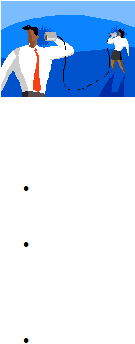

|

Page 61
Active listening refers to the deliberate effort to attend to what a person is
communicating, both verbally and non-verbally.
Most of the time, all an angry person needs is an opportunity to tell someone
how they feel, and have their feelings acknowledged. Seeing that you are
genuinely listening to their grievance can help lessen the intensity of their angry
reaction.
The following are some helpful components of active listening:
Showing non-verbally that you are listening. Make sure that your posture shows openness.
Establish eye contact. Speak in a soft, well-modulated, non-threatening tone of voice.
Reflecting verbal and non-verbal communication. Re-state what you hear from the person.
Example: “This is what I heard from you: You are mad because the package did not arrive on
time.” You can also mirror back their body language in a tentative but objective, non-judgmental
fashion. Example: “I can see that you’re really upset. You are clasping the desk very tightly.”
Clarify. Help the person make sense of their garbled, confusing, and/ or illogical statements.
“Could you help me explain to me a bit more about what happened in the cafeteria? What do
you mean by ‘he bullied you’?
|